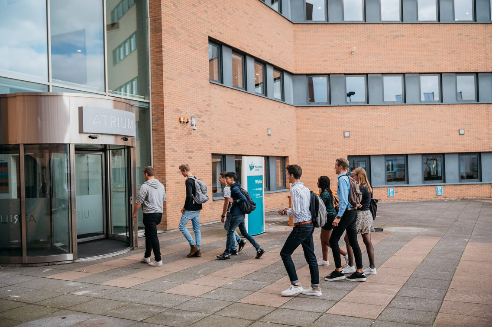

Het hoornbeeck Collage is een Chritelijke school voor middelbaar beroepsonderwijs (mbo). ze zijn één van de beste scholen in het land. Je hebt veel opleidingen waar je uit kan kiezen verspreit over de zes verschillende locaties die ze hebben.

Expert IT system en devices nivea 4
is een opleiding die gaat over het ict management in een bedrijf. Je ben de probleemoplosser en het probleem verkommer op het bedrijf. Je moet er ook voor zorgen dat alles soepel loopt en mensen hun werk kunnen doen.
Al Around system en devices nivea 3 is een opleiding over ict met mensen. Je ben een soort help desk, je help mensen hun probleem op te lossen. Je leert ongeveer het zelfde als de niveua 4 opleiding maar het is allemaal iets versimpeld en minder verdiept.
Al Around system en devices nivea 3 is een opleiding over ict met mensen. Je ben een soort help desk, je help mensen hun probleem op te lossen. Je leert ongeveer het zelfde als de niveua 4 opleiding maar het is allemaal iets versimpeld en minder verdiept.
je hebt de opleiding software developer,daar leer je meer over programmeren en het bedenken van apps en websites. dit is een opleiding die gefoccuse is op het bedenken en het maken van software. je gaat echt diep in op wat de klant wind en hoe je dat uitvoerd.
software-developer
software-developer